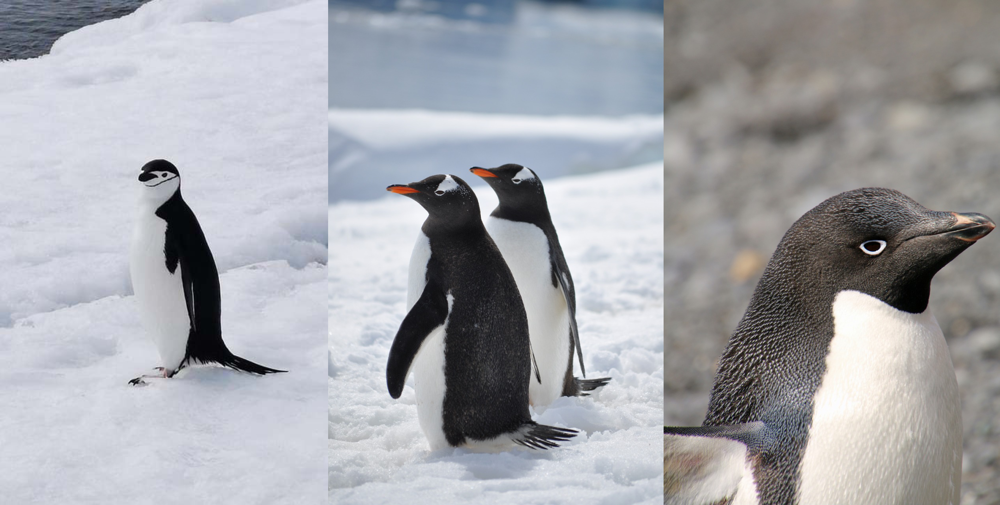

In the last post, we covered a topic known as “Classification”, which involves determining which class (from a set of discrete classes) that a given set of features belongs to. In this post, we will cover a similar topic, known as Clustering. Before we get into it, though, we need to cover some terminology, so let’s get into it.
Types of Machine Learning
There are two main types of machine learning: supervised learning and unsupervised learning. Let’s talk about supervised learning first.
Supervised learning occurs when a there are input features and output responses. We’ve already covered two different types of machine learning concepts: regression, and classification. For regression, there are input features, which are usually numbers, and output responses, which are also numbers. The model that we generate for regression purposes determines the relationship between the training data’s features and output responses and creates a continuous function that can later be used to estimate an output response for a set of sample input features. Classification also has input features and output responses, but the difference is that the output responses are discrete classes.
Unsupervised learning occurs when there are input features, but no output responses. In this case, the model has no way of relating input features to output responses (since they don’t exist) and therefore cannot perform regression or classification. However, that does not mean that nothing can be discovered from the input features. Clustering is the process of finding different input features that are related to one another. Unsurprisingly, these related features usually form “clusters”, and clustering models can determine this pattern. This gives insight into the data without having any output responses at all. Even more useful is the fact that once the model has determined the clustering pattern between the input features, a data scientist can give labels to the clusters, and the model knows to apply those labels to any new or old data that fits into a cluster.
Clustering models are also much different from the supervised learning models that we’ve looked at so far regarding the performance of different algorithms. For example, depending on the dataset, Logistic Regression will not produce results that are very different from, say, Decision Trees. When it comes to clustering, different algorithms may perform very differently, so this post will focus more on trying different models and seeing how they perform, rather than the theory behind them.
The Dataset
This time we’ll be using a cute little dataset known as the “Palmer Penguin Dataset”, which can be downloaded from Kaggle. This dataset contains information about the island location, body mass, flipper length, culmen (beak) length and depth, and sex of different penguins as features. The output responses correspond to the species of penguin, and they can be one of three: Chinstrap, Gentoo, and Adélie. To motivate us, here are some photos of each of the species:

Chinstrap Gentoo Adélie
Now that we’ve seen them, let’s take a look at the data:
import matplotlib.pyplot as pltimport pandas as pddf = pd.read_csv('penguins.csv', encoding='windows-1252')df.head()
species
island
culmen_length_mm
culmen_depth_mm
flipper_length_mm
body_mass_g
sex
0
Adelie
Torgersen
39.1
18.7
181.0
3750.0
MALE
1
Adelie
Torgersen
39.5
17.4
186.0
3800.0
FEMALE
2
Adelie
Torgersen
40.3
18.0
195.0
3250.0
FEMALE
3
Adelie
Torgersen
NaN
NaN
NaN
NaN
NaN
4
Adelie
Torgersen
36.7
19.3
193.0
3450.0
FEMALE
This dataset is nice and simple! Now, using clustering on this data isn’t going to help too much (since we already know that there are three classes), but it will still be nice to use this data to learn the basics.
Let’s use the fact that we know that there are three classes to plot them and immediately distinguish the clusters! First, let’s convert the output classes into numbers. We’ll set Chinstrap = 0, Gentoo = 1, and Adélie = 2:
arr = [0if element =="Chinstrap"else1if element =="Gentoo"else2for element in df['species']]df.insert(7, "species_number", arr)
Now, let’s assume that the two best determining factors of the penguin species is body mass and flipper length. Let’s try plotting these against each other and use different colors for each species:
What a nice plot! The left plot shows us that Gentoo penguins are very unique in their combination of flipper length and body mass, while Chinstrap and Adélie are harder to tell apart. The right graph shows us what the data points would look like if we didn’t know the classes ahead of time. Notice that it is substantially harder to determine the groupings without the colors.
Let’s see if we can find a nicer separation between Chinstrap and Adélie penguins by including one more feature and plotting in 3D:
This gives us a hint that the culmen length might be very important in discerning the different species. However, since these algorithms are best displayed in 2D, it would be best to try different combinations of features and see which ones creates the best clusters.
After some testing, the best features to use are flipper_length_mm and culmen_length-mm:
Looking at the plot on the right, it is much easier to discern the three clusters than before. Now that we’ve chosen which features separate the data the best, we can get into the different algorithms.
K-Means Clustering
K-Means Clustering works a lot like regression with a Mean Square Error. You supply it with the number of clusters, and it seeks to minimize the squared Euclidean distances between the centroids of the clusters and the rest of the points inside of the clusters. It is known as a Centroid-based Clustering algorithm. Let’s try it out:
K-Means didn’t do terribly, but it didn’t do well either. It is clearly able to see the distinction between Gentoo and the other species, but it has a hard time finding the best way to separate Chinstrap from Adélie. Let’s look at another clustering algorithm.
DBSCAN
DBSCAN stands for Density-Based Spatial Clustering of Applications with Noise and is a very popular clustering algorithm. DBSCAN is a Density-based Clustering algorithm, which means it focuses more on the density of collections of points rather than their distances from some centroid. Let’s take a look at how it performs:
Again, we can see that the clustering algorithm is easily able to separate Gentoo from the rest, but Chinstrap and Adélie are similar enough that it can’t discern between them. DBSCAN also has an interesting secondary use in that it can spot anomalies, marked in the plots with red “x”s.
Let’s try replacing Flipper Length with Culmen Depth and seeing what we can produce:
Finally, our model finds the three clusters pretty well! Unfortunately, the data contains a lot of outliers and causes the model to have a hard time discerning which features belong to which cluster, but these figures still give us hints as to how many possible classifications there might be.
However, this is the perfect stopping point to lead us into the next and final blog post: Anomaly Detection.